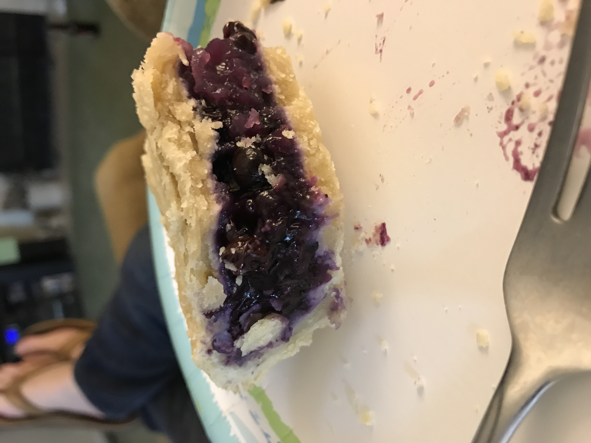

Kinger's Blueberry Pie Recipe
Recipe Description & Ingredient List

Recipe Description
Deliciously sweet and flaky blueberry pie, perfect for any season of the year.
Ingredients
- 6 tbsp Crisco
- 8 tbsp All-purpose flour
- 2 tbsp cold water
- 6 cups Blueberries
- 2/3 cup Sugar
- 2 tbsp Cornstarch
Recipe Steps
- Heat the blueberries and sugar until the sugar is dissolved and the blueberries are softened to make the filling. Add 2 tbsp of cornstarch to thicken the mixture and set aside to cool slightly.
- Combine Crisco, flour, and ice cold water on counter to make the crust. The mixture should be crumbly, but still be able to form a ball. Adjust with flour or water as needed.
- Wrap the crust mixture in saran wrap and store in tghe fridge for 20-60 minutes.
- Preheat the overn to 425 fahrenheit. Place a baking sheet on the bottom rack to catch any juices.
- After the crust is chilled, divide it in half and roll both pieces out on a floured surface.
- Asssemble the pie and bake for 20 minutes at 425 fahrenheit. Then Reduce heat to 375 fahrenheit and bake for another 40-50 minutes. At lease until all of the juices are bubbling and the crust is cooked. cover crust with foil if it begings to over brown.
- Remove from oven and let cool to room temperature, for at least 4 hours.
- Dust the top of the pie lightly with pwdered sugar.
- Enjoy! Love Pop Kinger!
Family Recipe's Home